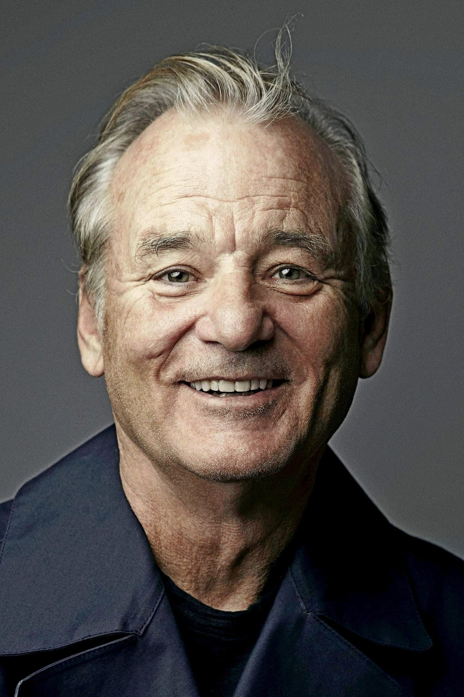

Bill Murray
 William James "Bill" Murray (21 de septiembre de 1950) es un actor y humorista estadounidense. Obtuvo reconocimiento en el programa de humor Saturday Night Live, actuación que le valió obtener un premio Emmy, y más tarde protagonizó películas cómicas como Caddyshack (1980), Los Cazafantasmas (1984) y Groundhog Day (1993). Obtuvo elogios de la crítica por su actuación en películas como Lost in Translation (2003), por la cual fue nominado al Óscar, y en producciones dirigidas por Wes Anderson como Rushmore (1998), The Royal Tenenbaums (2001) y The Life Aquatic with Steve Zissou (2004). Ha sido nominado al Globo de Oro por sus papeles en Los Cazafantasmas, Rushmore (1998), Hyde Park on Hudson (2012), St. Vincent (2014) y en la miniserie de HBO Olive Kitteridge (2014), por la que ganó su segundo premio Primetime Emmy. También recibió el premio Mark Twain en 2016 en honor a su carrera como comediante. Su estilo de comedia es reconocido como humor seco, presentado sin variación de emociones o lenguaje corporal. Ver